En este apartado vamos a ver, a modo de ejemplo, cómo crear un paquete que instale el VirtualBox Extension Pack.
Para empezar, en una máquina donde tengamos instalado VirtualBox, descargaremos el VirtualBox Extension Pack desde el apartado de descargas de la web de VirtualBox.
Por ejemplo:
| $ wget https://download.virtualbox.org/virtualbox/7.0.10/Oracle_VM_VirtualBox_Extension_Pack-7.0.10.vbox-extpack |
Una vez descargado, realizamos una instalación del paquete de extensión, por ejemplo en nuestra máquina virtual xubuntu:
| $ vboxmanage extpack install Oracle_VM_VirtualBox_Extension_Pack-7.0.10.vbox-extpack --replace |
Lo hacemos así porque sabemos que el instalador nos va a mostrar los términos de licencia y nos va a pedir que los aceptemos:
| Do you agree to these license terms and conditions (y/n)? |
Introducimos "y" para aceptar la licencia:
|
License accepted. For batch installation add 0%...10%...20%...30%...40%...50%...60%...70%...80%...90%...100% |
Y tomamos nota del parámetro --accept-license porque lo usaremos en nuestro paquete para que se instale automáticamente.
A continuación, abrimos debreate:
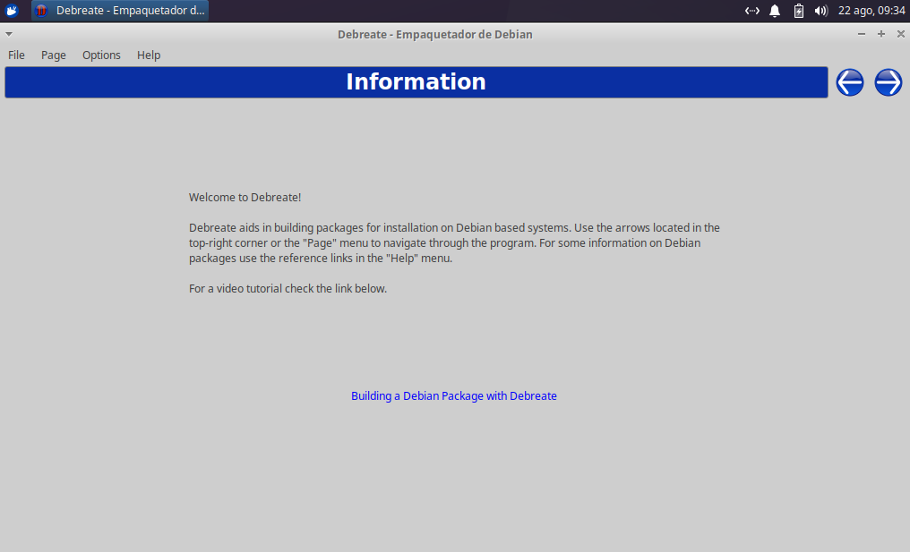
Hacemos clic sobre la flecha derecha para pasar a la pantalla de introducción de información del fichero de control e introducimos el nombre que queremos dar al paquete, la versión, el nombre de la persona que mantiene el paquete, su email, la arquitectura, la sección a la que pertenece el paquete, una descripción corta y una descripción larga:

A continuación hacemos clic sobre la flecha derecha y pasaremos a la pantalla donde especificaremos las dependencias del paquete:

Fijaos en que hemos introducido como dependencia el paquete virtualbox-7.0. Ésto significa que, cuando tratemos de instalar nuestro paquete virtualbox-extpack, el sistema de gestión de paquetes instalará también como dependencia el paquete virtualbox.7.0
El siguiente paso, será seleccionar los ficheros que vamos a distribuir y la ubicación donde los vamos a ubicar:
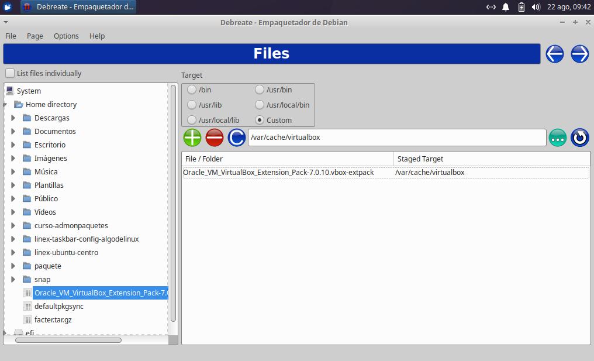
En este caso, como lo que debe hacer nuestro paquete es ejecutar el instalador del Oracle VirtualBox Extension Pack, lo primero que debe hacer el paquete es colocarlo en una ubicación. En este caso, hemos elegido una ubicación personalizada: /var/cache/virtualbox para que posteriormente lo instale mediante el script post-install.
Hacemos clic en la fecha derecha para pasar a la ventana siguiente:
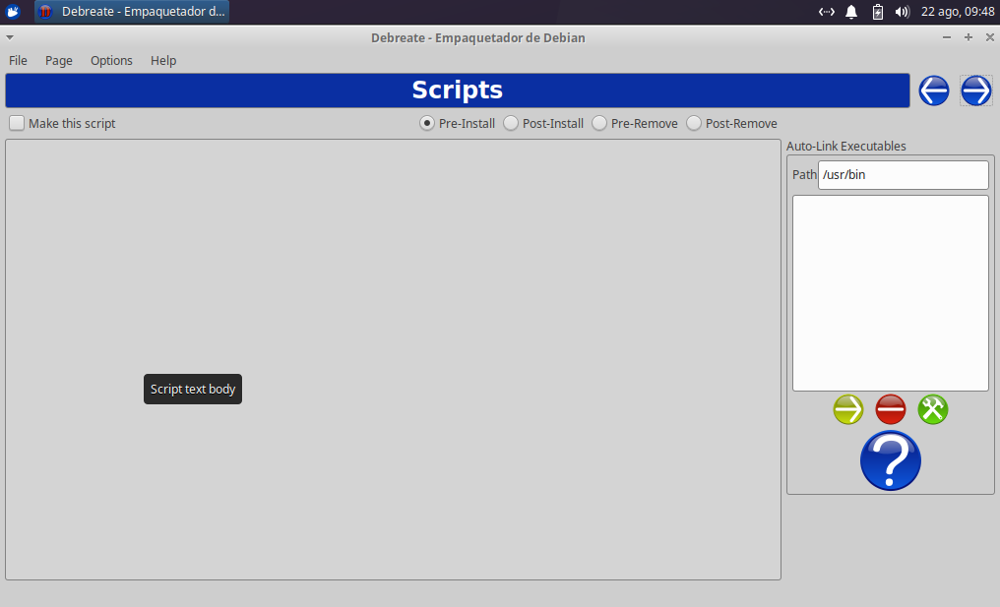
Como hemos dicho, el script Post-Install será quien se encargará de ejecutar el instalador. Por tanto seleccionamos "Post-Install", marcamos la casilla "Make this script" para que se cree el script postinst y escribimos los comandos que se agregarán al script:
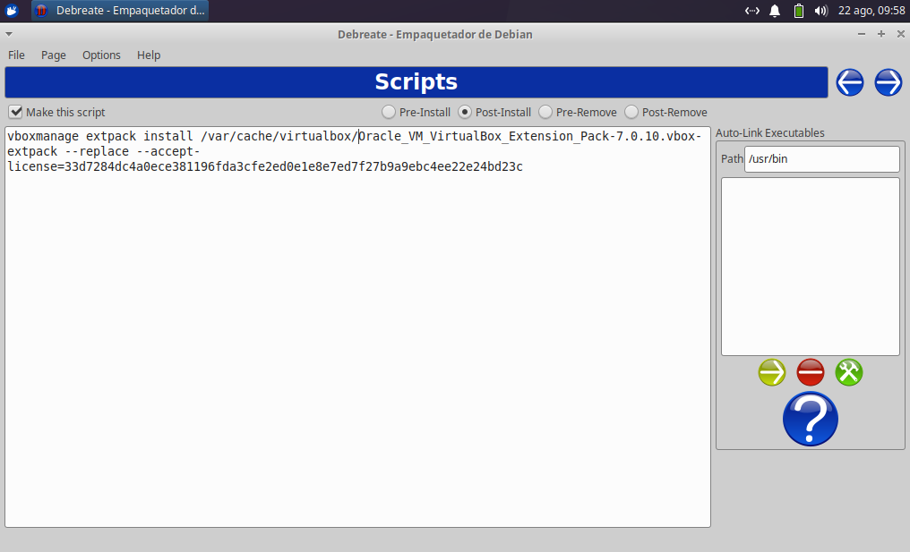
Observad el comando de instalación que hemos introducido en el postinst:
| vboxmanage extpack install /var/cache/virtualbox/Oracle_VM_VirtualBox_Extension_Pack-7.0.10.vbox-extpack --replace --accept-license=33d7284dc4a0ece381196fda3cfe2ed0e1e8e7ed7f27b9a9ebc4ee22e24bd23c |
Fijáos en que la ubicación del instalador es aquella donde el paquete lo coloca: /var/cache/virtualbox y daos cuenta de que el comando de instalación es el mismo que el que usaríamos para inststalarlo desde la línea de comandos al que le agregamos la aceptación de licencia para que la instalación se realice de forma completamente desatendida.
De esta forma, el paquete colocará primero el instalador del VirtualBox Extension Pack en el directorio /var/cache/virtualbox y posteriormente, el script postinst lo instalará.
El siguiente paso será completar el changelog:
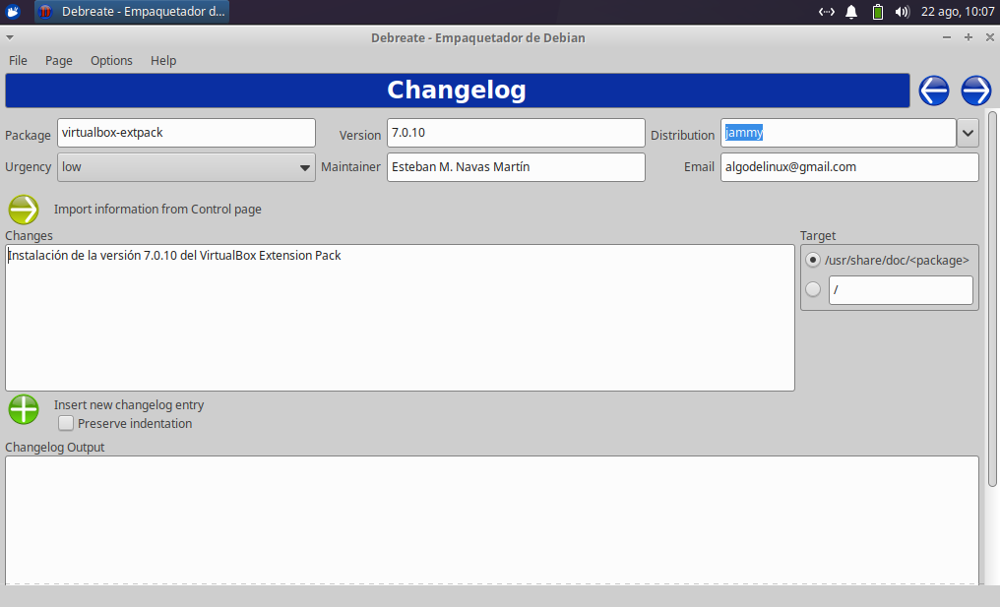
Podemos introducir los datos del paquete haciendo clic en el botón "Insert new changelog entry" e introduciéndolos, o haciendo clic en "Import information from Control page" para importar los datos desde el fichero de control. Una vez introducidos, tendremos que escribir la información de los cambios que trae esta versión del paquete:
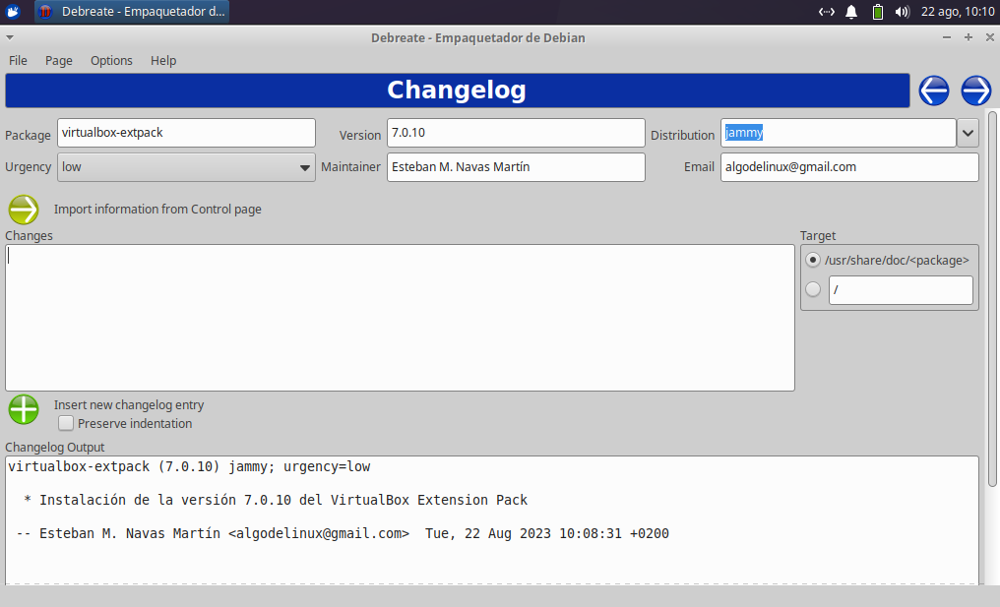
A continuación, hacemos clic en la flecha derecha y pasaremos a la ventana de introducción de datos de licencia:
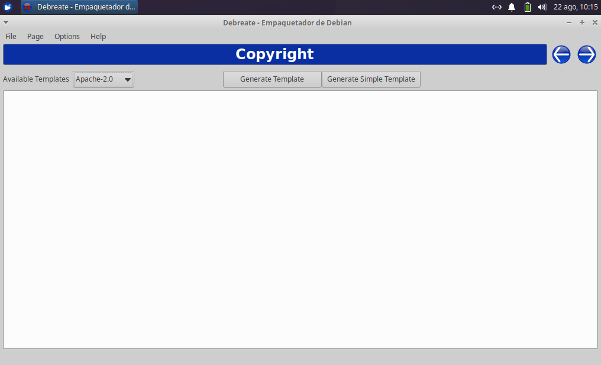
Seleccionamos el tipo de licencia de nuestro paquete y generamos el contenido del fichero de copyright en formato largo o en formato corto, dependiendo de que usemos el botón "Generate Template" o el botón "Generate Simple Template":
Suponiendo que nuestro paquete tuviese licencia GPL v3:
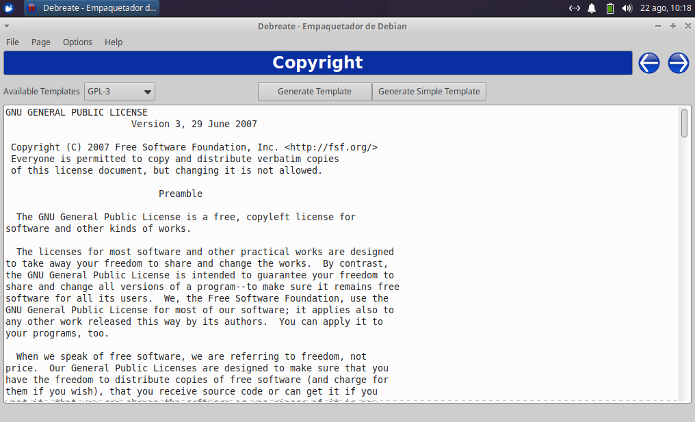
Al hacer clic en el botón de la flecha derecha, pasaremos al siguiente paso, que sirve para crear un lanzador de menú:
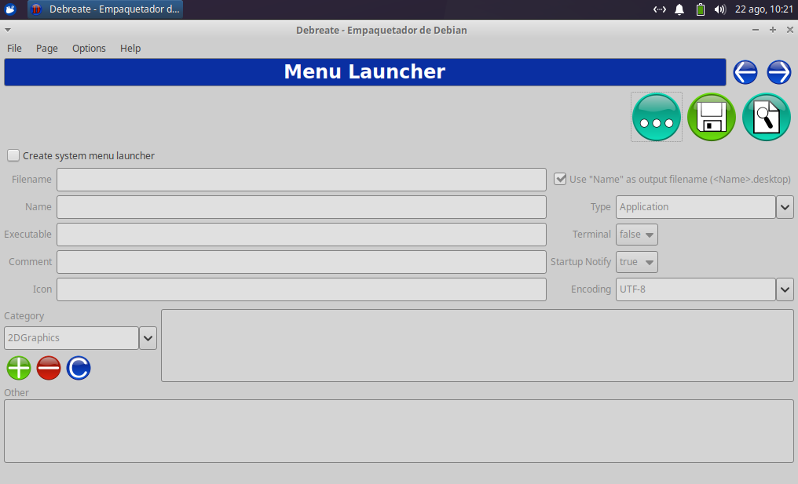
Como nuestro paquete no necesita un lanzador, hacemos clic en la flecha derecha para ir al siguiente paso:
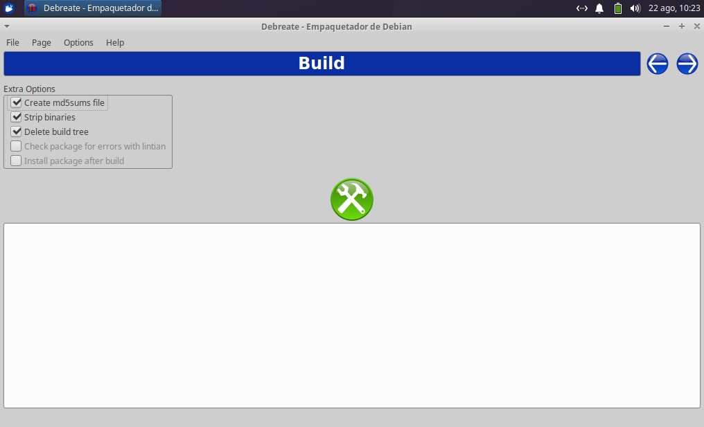
Llegados a este punto, hacemos clic en el botón verde de las herramientas para proceder a la creación del paquete. Nos aparecerá un ventana donde elegiremos el lugar donde guardar el paquete:
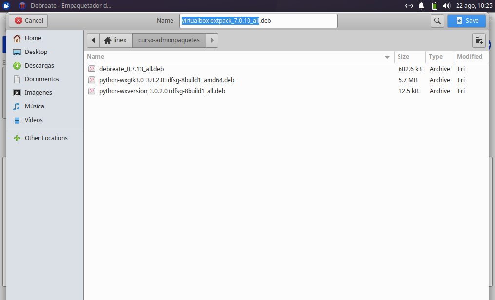
Hacemos clic en el botón "Save" para guardar el paquete y veréis cómo comienza el proceso de creación del mismo:
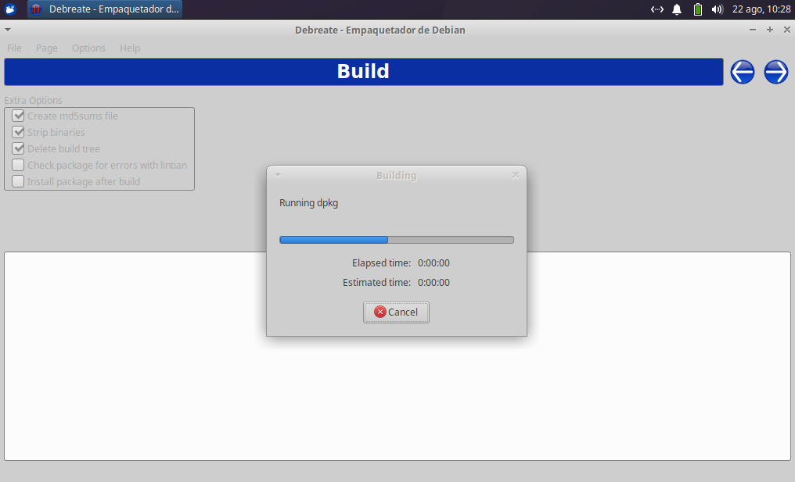
Cuando termine de crearlo, veréis un mensaje de confirmación como el siguiente:
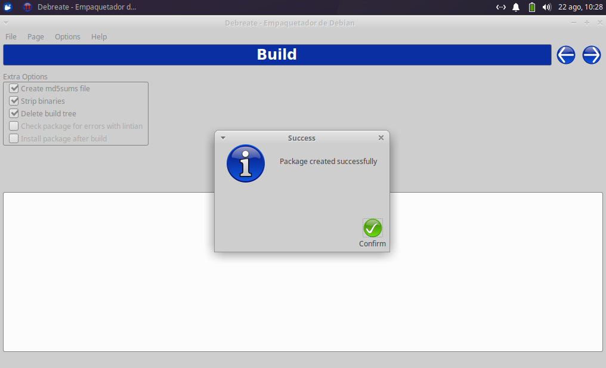
Hacemos clic en el botón "Confirm" y listo.
El sigiente paso será guardar el proyecto para que la próxima vez no tengamos que empezar desde cero:
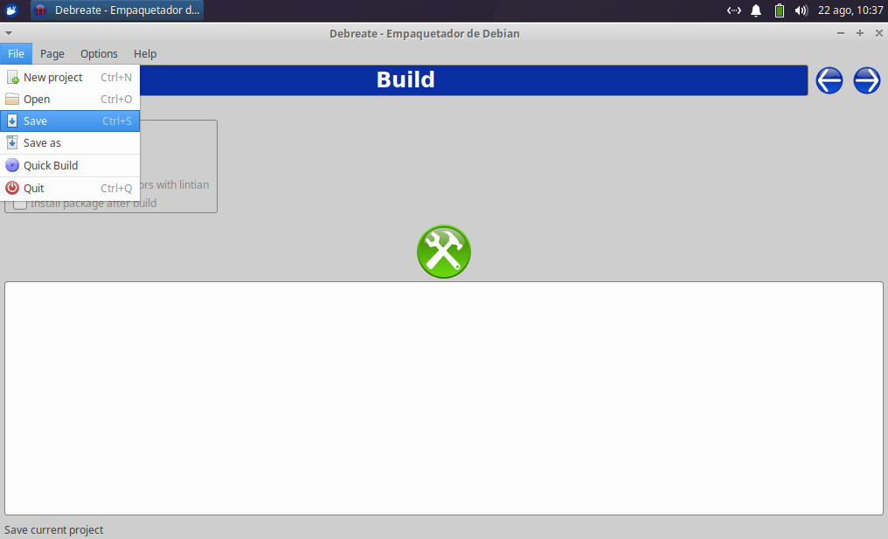
Damos un nombre al proyecto y hacemos clic en el botón "Save" para guardarlo.
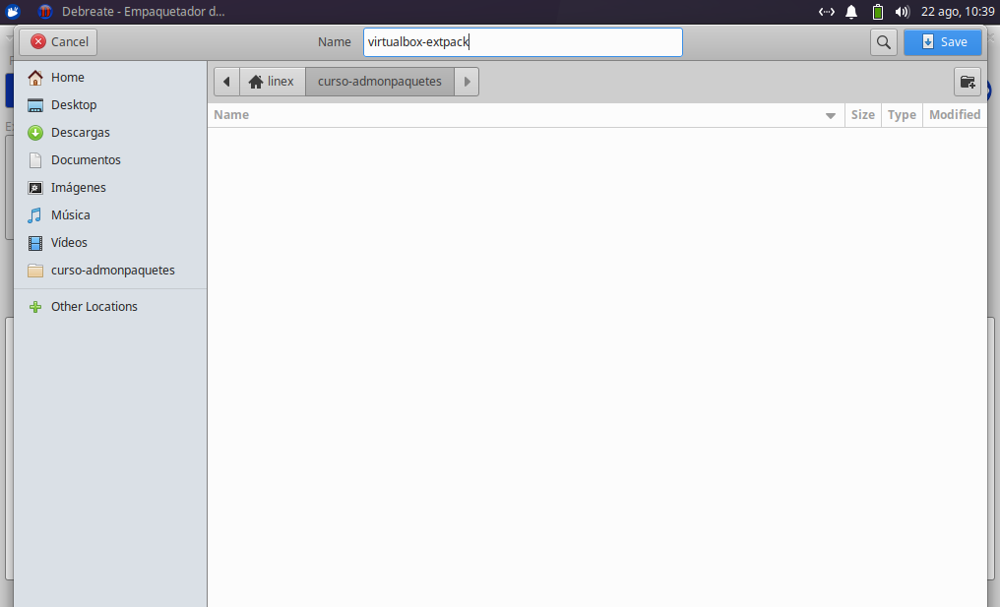
Os recomendamos crear este paquete a modo de práctica y, si tenéis algún problema, contactad con vuestro tutor.